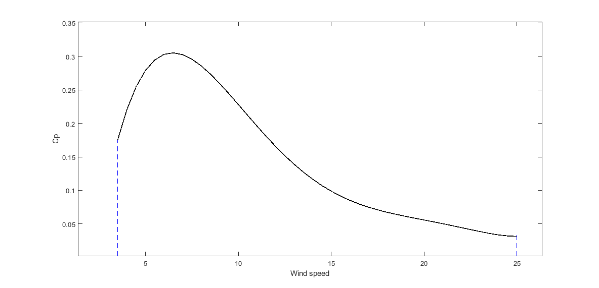
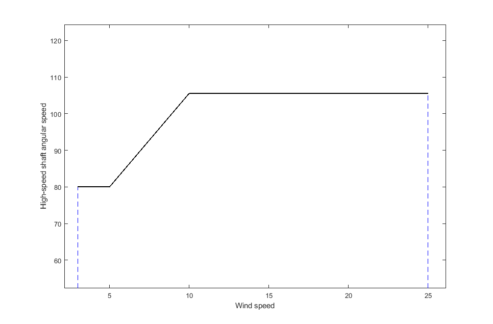
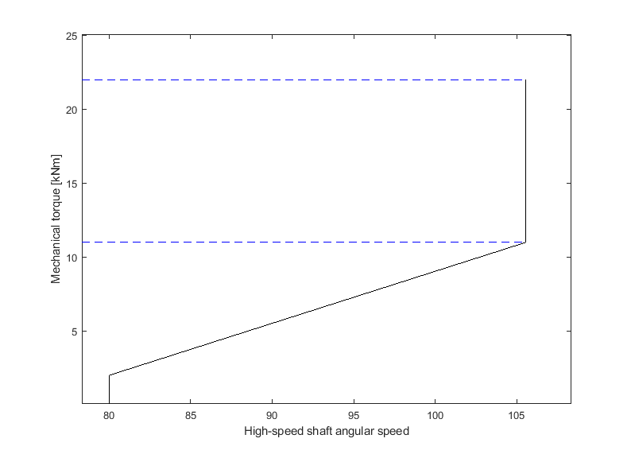
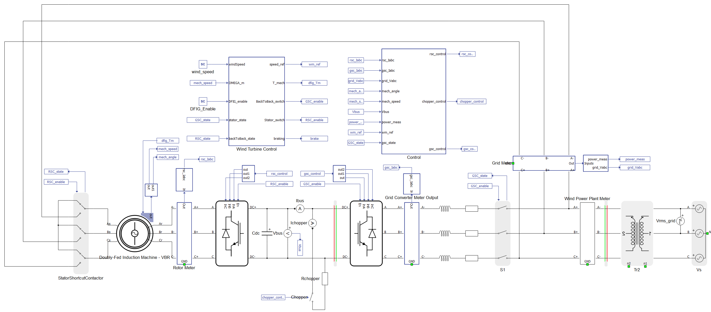
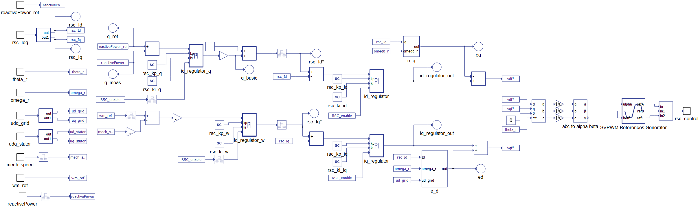
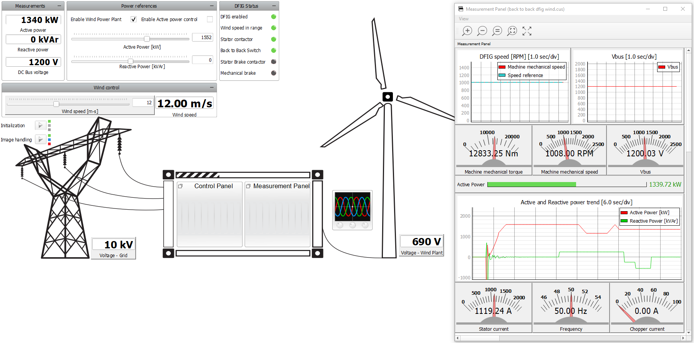
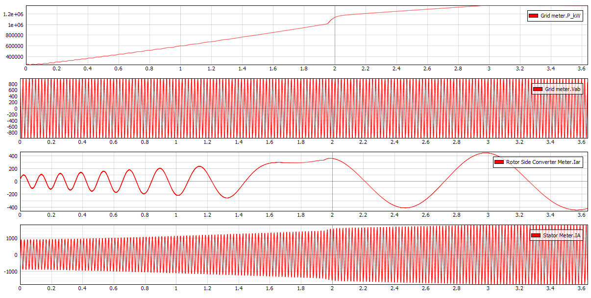
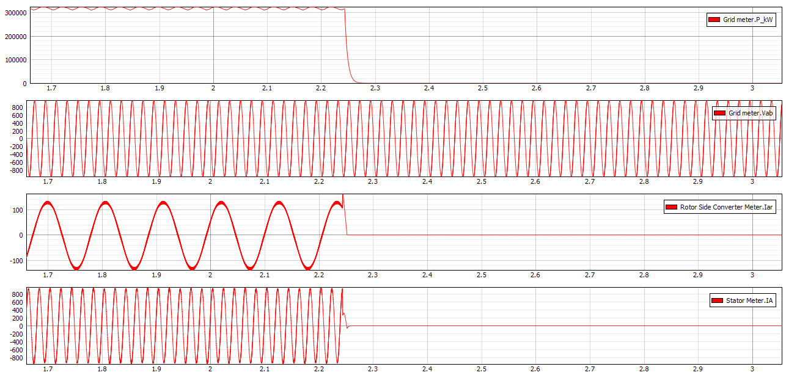

Wind Turbine with Doubly-fed Induction Generator
Demonstration of the functionality and normal operation of a Type-3 wind turbine, using a doubly-fed induction generator (DFIG) with the rotor connected to the stator via a back-to-back frequency converter.
Introduction
The doubly-fed induction generator (DFIG) with the back-to-back converter is a system frequently used in wind turbines. Traditional wind turbines have fixed turning speeds, while DFIG enables wind turbines to operate with various range of speeds. The back-to-back converter is connected to the rotor of the DFIG, and its purpose is to feed the rotor with currents of varying frequency, in order to reach the desired rotor speeds. This application note demonstrates the implementation of a DFIG wind turbine with a back-to-back converter controller. The simulation cases presented in this document cover the dynamic response of DFIG to changes in wind speed and during turbine braking process.
The power contained in the form of kinetic energy in the wind Pv is expressed by:
where Vv is the average wind speed in the swept area of , where R is diameter of the rotor blade, and ρ is air density. The wind turbine can recover only a part of that power (Pt):
The power coefficient Cp is a dimensionless parameter that expresses the effectiveness of the wind turbine in the transformation of kinetic energy of the wind into mechanical energy. This coefficient is a function of wind speed, speed of the rotor blades, and the pitch angle. For our Wind Turbine with DFIG model, rotor blade length is set to R = 50 m, while air density is set to . The pitch angle is automatically regulated in such a way that the change of Cp is as presented in Figure 1:

As mentioned before, rotor blades can revolve in range of different speeds. The curve of the high-speed shaft angular speed as a function of the wind speed can be observed in Figure 3. This graph can be divided in zones, where in each zone the change in angular speed is different. A different control of DFIG is implemented based on which zone the machine currently operates.

Based on the wind speed and the power coefficient, we can calculate the mechanical torque on the high-speed shaft. The rotor-side converter control is set up in a way that it adjusts the rotor speed based on the current mechanical torque. That dependency can be observed in Figure 3.

Nominal ratings (machines mechanical torque, and angular speed) are shown in Figure 3 as a maximum point of both values, which occurs when nominal mechanical torque is 20006 Nm, while the nominal angular speed of the generator is . These nominal ratings are reached when the wind speed is , and are maintained until the wind speed is considered to strong for the machine (in this case, ).
Model description
The DFIG with the back-to-back converter model is presented in Figure 4. The Stator Contactor can be seen on the stator side (bottom left) while the Converter Contactor is visible on the back-to-back converter side (bottom right). Their purpose is to disconnect the DFIG and back-to-back converter from the grid and bring the rotor speed to zero when the wind speed is out of operating range or when when the braking is activated. Contactors are controlled in the Contactor control subsystem.

The Wind Turbine Control subsystem contains a C function which calculates the mechanical torque and speed reference, based on the wind speed. It also determines which operating mode the DFIG is working.

In Figure 5, we see the Rotor-side Converter Control subsystem where the vector control is implemented. This control is in charge of supplying the rotor with voltages that take a different amplitude and frequency at steady state in order to reach the required speed of the rotor. Input ‘omega_r’ feeds this control as an output of a C function based on the wind speed input.
The most important nominal values are provided in Table 1.
| Variable Name | Nominal Value |
|---|---|
| Grid line voltage | 690 V |
| DFIG nominal power | 2250 kW |
| Adequate wind speed | 3 - 25 m/s |
| Nominal rotor speed | 105.56 rad/s |
| Nominal stator current | 2241 A |
| Back-to-back DC link range | 950 - 2000 V |
| Back-to-back inverter carrier frequency | 4000 Hz |
Simulation
This application comes with a pre-built SCADA panel (Figure 6). The panel offers most essential user interface elements (widgets) to monitor and interact with the simulation in runtime. You can customize it freely to fit your needs.
The first simulation example observes the impact of a change in wind speed from to on the state of the model. You can change the Wind Speed in the SCADA panel, and the corresponding change in speed of the rotor shaft, power output, and disturbance in Vbus can be seen in the Trace graphs in HIL SCADA (Figure 6). There is also a possibility to enable and disable the Wind Generator at any moment by unchecking the Enable machine checkbox. The state of the contactors (stator and back-to-back contactor) can also be observed in the SCADA panel. PI parameters of the regulators can be changed through SCADA, by changing the value in the Text box widgets.

In Figure 7, we can observe changes in power output, rotor and stator currents, and the invariable line voltage, measured by the three-phase meter component.

If the wind speed becomes too high, or we disable the DFIG manually, an inverse mechanical torque will be applied to the shaft in order to bring its speed to zero (by which we simulate braking). In addition to this process, the DFIG and the back-to-back are disconnected from the grid, and the Vbus begins to fall to zero. This process can be observed in Figure 8, where the DFIG is manually disabled while the wind speed was at .

Test automation
We don’t have a test automation for this example yet. Let us know if you wish to contribute and we will gladly have you signed on the application note!
Example requirements
Table 2 provides detailed information about the file locations and hardware requirements for running the model in real-time, followed by the HIL device resource utilization when running the model using this minimal hardware configuration. This information is provided to help you with running and customizing the model as you see fit.
| Files | |
|---|---|
| Typhoon HIL files | examples\models\grid-connected converters\back to back dfig wind back to back dfig wind.tse back to back dfig wind.cus |
| Minimum hardware requirements | |
| No. of HIL devices | 1 |
| HIL device model | HIL506 |
| Device configuration | 1 |
| HIL device resource utilization | |
| No. of processing cores | 3 |
| Max. matrix memory utilization | 1.07% (core2) 94.85% (core1) 37.87% (core0) |
| Max. time slot utilization | 23.93% (core2) 29.64% (core1) 25.36% (core0) |
| Simulation step, electrical | 1 µs |
| Execution rate, signal processing | 100 µs |
Authors
[1] Dimitrije Jelic